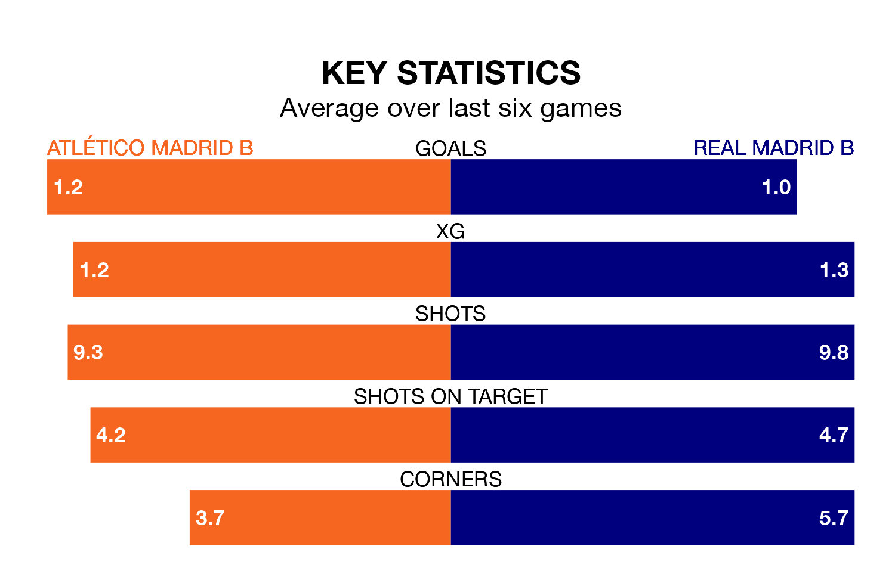

Atlético Madrid B face Real Madrid B at Miniestadio Cerro del Espino on Sunday looking to secure a first win in four Primera Division RFEF Group 2 games.
Atlético Madrid B have lost none and drawn three matches since they last earned three points – against CD Atlético Baleares on February 18.
They face a Madrid B side who have won two and drawn one over that time.
With 39 goals in 27 games so far this season, Atlético Madrid B are scoring more than average in the league with 1.4 goals per game. But they are conceding more than average too, letting in 36 goals at a rate of 1.3 per game.
Madrid B are also above average scorers, with 1.3 goals per game, compared to a league average of 1.1. They have conceded 1.2 goals per game.
In the last 10 years, Atlético Madrid B and Madrid B have played each other on 10 occasions. They won three each, and they drew four times.
On average, Atlético Madrid B scored 1.6 goals and Madrid B 1.6 in those matches.
Their last meeting was on September 16, when they played out a 2-2 draw.
In Nicolás Paz Martínez, the away side have one of the league's sharpest shooters so far this season. He has notched seven goals in 15 appearances, to sit sixth in the scoring charts.
The hosts' top scorer, with seven goals in 21 games, is Diego Vicente Bri Carrazoni.
Atlético Madrid B are 14th in the table after 27 games, of which they have won seven and drawn 12, earning 33 points.
Madrid B are two places ahead of Atlético Madrid B in 12th, with eight wins and 11 draws putting them on 35 points.
Atlético Madrid B's last match was on Sunday, a 1-1 draw against Recreativo de Huelva, with Álex Calatrava Torrado getting the goal for Atlético Madrid B.
Madrid B drew 0-0 with Antequera CF last time out, on March 9.
Updated: 15:10 (UTC), 15/03/24